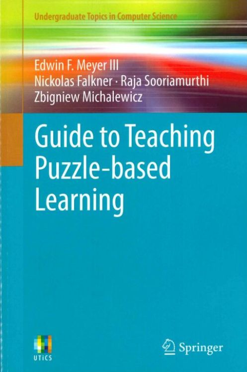
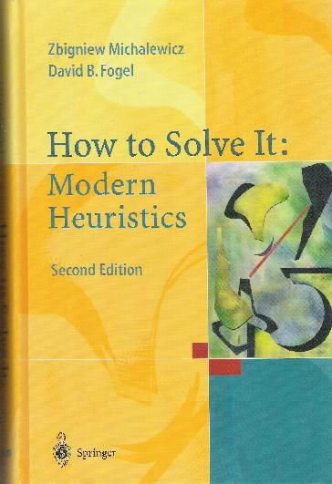
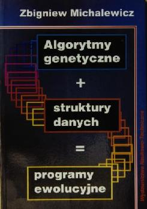
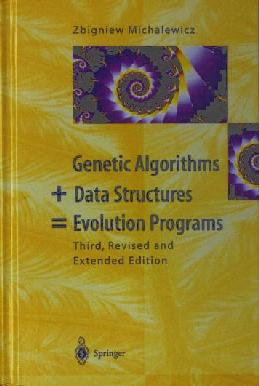
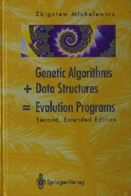
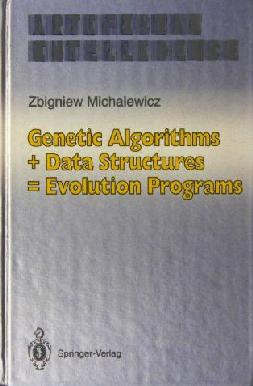

The Rise of Artificial Intelligence: Real-world Applications for Revenue and Margin Growth
Amazon ↗

A Guide to Teaching Puzzle-Based Learning
Amazon ↗
Puzzle-Based Learning — Polish translation, 2nd edition
How to Solve It: Modern Heuristics — Greek translation
Variants of Evolutionary Algorithms for Real-World Applications
Springer ↗
Puzzle-Based Learning — Polish translation
Puzzle-Based Learning: An Introduction to Critical Thinking, Mathematics & Problem Solving
Amazon ↗
Design by Evolution
Springer ↗
Advances in Metaheuristics for Hard Optimization
Springer ↗
Winning Credibility: A Guide for Building a Business from Rags to Riches — 2nd edition
Amazon ↗
Adaptive Business Intelligence
More ↗
Parameter Setting in Evolutionary Algorithms
Springer ↗
Winning Credibility: A Guide for Building a Business from Rags to Riches
More ↗
How to Solve It: Modern Heuristics — Polish translation
More ↗
Credibility: The Critical Success Factor — Polish translation
More ↗
Intelligent Media Technology for Communicative Intelligence
Springer ↗

How to Solve It: Modern Heuristics — 2nd edition
Amazon ↗
How to Solve It: Modern Heuristics — Chinese translation
How to Solve It: Modern Heuristics
Amazon ↗
Evolutionary Computation: Basic Algorithms and Operators
Amazon ↗
Evolutionary Computation: Advanced Algorithms and Operators
Amazon ↗
Genetic Algorithms + Data Structures = Evolution Programs — Chinese translation
Evolutionary Computation
Genetic Algorithms + Data Structures = Evolution Programs — Korean translation
Handbook of Evolutionary Computation
Amazon ↗
Evolutionary Algorithms in Engineering Applications
Amazon ↗

Genetic Algorithms + Data Structures = Evolution Programs — Polish translation

Genetic Algorithms + Data Structures = Evolution Programs — 3rd edition
Amazon ↗

Genetic Algorithms + Data Structures = Evolution Programs — 2nd edition

Genetic Algorithms + Data Structures = Evolution Programs — 1st edition
Statistical and Scientific Databases
Amazon ↗
Proceedings of the 5th International Conference on Statistical and Scientific Database Management
Amazon ↗